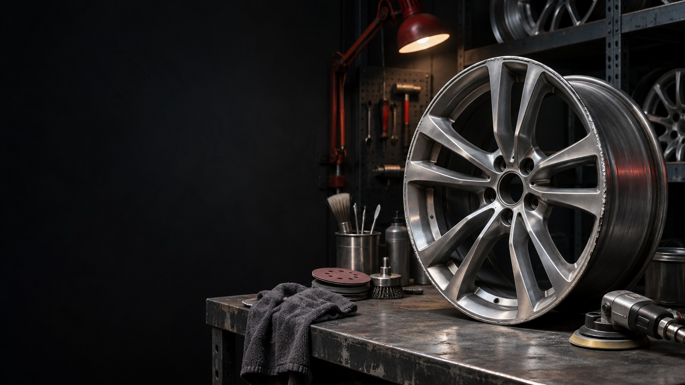
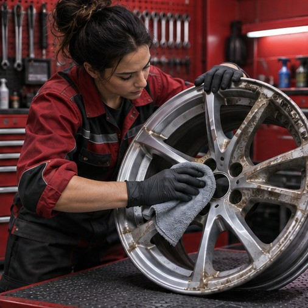

Осмотр и восстановление
Посмотрите на кромку
Перетащите ползунок, чтобы сравнить вид одного диска до и после восстановления.
Иллюстрация процесса. Возможность ремонта зависит от повреждения.
ДоПосле
Ремшина · Маяковского, 69/2а
Привезите его на осмотр. В мастерской выполняют правку, прокатку, сварку и покраску дисков.
Уточнить осмотр диска
Осмотр и восстановление
Перетащите ползунок, чтобы сравнить вид одного диска до и после восстановления.
Иллюстрация процесса. Возможность ремонта зависит от повреждения.

Снимите диск целиком и повреждение сбоку. Назовите диаметр и скажите, теряет ли шина давление.
Уточнить осмотр дискаИркутск
Ежедневно, 09:00–20:00